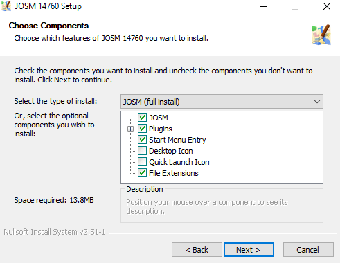
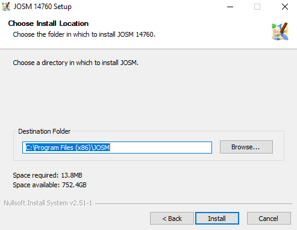
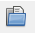

Pengenalan Java OpenStreetMap (JOSM)
Tujuan Pembelajaran:
- Mengerti cara download file instalasi JOSM
- Mampu melakukan instalasi JOSM
- Mampu mengubah pengaturan JOSM
- Memahami tampilan antarmuka JOSM
JOSM adalah singkatan dari Java OpenStreetMap yang merupakan perangkat editor OpenStreetMap berbasis desktop. JOSM memungkinkan Anda melakukan proses edit data pemetaan secara offline untuk sementara waktu atau tidak harus selalu terkoneksi dengan internet. Hal ini tentunya akan memudahkan Anda yang bekerja dalam keterbatasan koneksi internet. Anda hanya membutuhkan koneksi internet ketika akan men-download data dari OpenStreetMap dan ketika akan men-upload data ke server OpenStreetMap. Selain itu pada modul ini juga akan mempelajari cara untuk mengubah beberapa pengaturan pada JOSM agar nantinya memudahkan Anda dalam menggunakannya. Anda juga akan mempelajari dan memahami apa saja bagian-bagian yang ada pada tampilan antarmuka di JOSM. Dengan memahami setiap bagian dari JOSM, di akhir modul ini Anda akan mendapatkan pemahaman secara menyeluruh mengenai perangkat JOSM beserta beberapa pengaturan dasar di dalamnya.
I. Download JOSM
Jika Anda memiliki salinan file instalasi JOSM pada sebuah CD atau flashdisk, Anda dapat langsung melanjutkan ke sub-bab selanjutnya yaitu Menginstal JOSM. Tetapi jika Anda tidak memiliki JOSM, atau ingin memiliki JOSM versi terbaru, silakan buka web browser Anda (dapat menggunakan Firefox, Chrome, Opera, atau Internet Explorer). Pada kolom alamat di bagian atas jendela, kemudian ketik josm.openstreetmap.de kemudian tekan enter. Anda juga dapat menemukan situs JOSM dengan mengetik kata pencarian “JOSM” pada mesin pencarian google. Situs JOSM akan tampak seperti di bawah ini.
Silakan pilih file instalasi sesuai dengan sistem operasi komputer Anda. Jika Anda menggunakan komputer dengan sistem operasi Windows, klik Windows JOSM Installer untuk men-download JOSM. Jika Anda memiliki sistem operasi lainnya, klik pada link yang sesuai dengan sistem operasi komputer Anda. Kemudian Anda dapat men-download-nya. Pada modul ini kami akan mengasumsikan Anda menggunakan Windows, tetapi petunjuknya hampir sama dengan sistem operasi lainnya.
II. Menginstal JOSM
Setelah Anda berhasil men-download JOSM, sekarang Anda akan menginstal JOSM ke komputer atau laptop Anda. Berikut ini adalah cara-cara untuk melakukan instalasi JOSM:
- Temukan file instalasi JOSM di dalam komputer Anda. Klik dua kali pada file tersebut untuk memulai instalasi. Kemudian akan muncul jendela “Do you want to allow this app from an unknown publisher to make changes to your device?”, lalu klik Yes.
- Selanjutnya akan muncul jendela untuk memilih bahasa. Di modul ini hanya akan membahas JOSM yang berbahasa Inggris. Jika bahasa sudah dipilih, silakan klik OK.

- Kemudian akan muncul jendela selanjutnya mengenai JOSM Setup Wizard. Klik Next.

- Selanjutnya akan muncul jendela License Agreement. Klik I Agree.

- Berikutnya akan muncul jendela Choose Components. Disini Anda dapat memilih apa saja dari bagian JOSM yang ingin Anda install. Kemudian klik Next.

- Selanjutnya akan muncul jendela Choose Install Location. Disini Anda dapat memilih folder dimana Anda ingin menginstal JOSM. Kemudian klik Install.

- Ketika instalasi selesai, klik Finish untuk membuka JOSM pertama kalinya. Kemudian, ketika ingin memulai JOSM, Anda dapat melakukannya dengan mengklik pada Start Menu di pojok kiri bawah pada komputer Anda, dan klik program JOSM.
- Ketika JOSM terbuka, maka akan terlihat tampilan seperti di bawah ini:

Catatan: Anda mungkin memiliki masalah ketika melakukan instalasi JOSM apabila Java belum terinstal di komputer Anda. Jika Anda memiliki masalah ketika melakukan instalasi pada bagian ini, cobalah mendownload dan menginstal Java. Anda dapat mendownloadnya disini: http://www.java.com/en/download/ Anda mungkin akan melihat sebuah jendela muncul saat pertama kali membuka JOSM yang menanyakan untuk memperbarui perangkat lunak tersebut. Anda tidak perlu memperbaharuinya karena yang baru saja Anda download perangkat lunak baru. Tekan tombol “Cancel”. Jika Anda tidak ingin melihat pesan ini lagi, centang kotak di bawah sebelum menekan “Cancel”. JOSM yang digunakan dalam modul ini versi 14760. Tampilan mungkin berbeda jika Anda menggunakan JOSM versi yang lain.
III. Mengubah Pengaturan Pada JOSM
a. Mengubah Bahasa
Banyak pengaturan yang dapat Anda sesuaikan di JOSM. Salah satu pengaturan yang Anda mungkin ingin sesuaikan adalah bahasa. JOSM telah diterjemahkan ke dalam berbagai macam bahasa, dan Anda dapat memilih bahasa yang Anda inginkan. Berikut ini adalah langkah-langkah untuk mengubah bahasa di JOSM:
- Akses jendela Preferences, klik Edit → Preferences.
- Pada sisi sebelah kiri, klik ikon Display Setting yang terlihat seperti kaleng dan kuas cat.

- Di atas jendela, klik tab yang bertuliskan Look and Feel.
- Pilihlah bahasa yang Anda inginkan pada kotak daftar pilihan yang bertuliskan Language. Klik OK dan kemudian restart untuk mengganti bahasa JOSM anda ke dalam bahasa yang Anda inginkan.
b. Mengatur Akun
Setelah mengubah bahasa yang diinginkan untuk digunakan di JOSM, Anda juga harus memasukkan nama akun OSM Anda serta kata sandinya di dalam JOSM. Tujuannya adalah agar ketika Anda melakukan edit atau menambahkan data di peta OSM, server akan mengenali bahwa hasil edit tersebut dibuat oleh Anda. Jika Anda tidak memasukkan nama akun, maka Anda tidak dapat memasukkan data yang sudah Anda edit atau tambahkan ke dalam peta OSM. Berikut ini adalah langkah-langkah untuk memasukkan akun OSM Anda di JOSM:
- Akses jendela Preferences, klik Edit → Preferences.

- Pada sisi sebelah kiri, klik ikon Connection Setting yang terlihat seperti gambar globe atau bola dunia.

- Pilih Authentication → Use Basic Autentication.
- Masukkan nama akun dan kata sandi Anda.

- Klik OK dan kemudian restart JOSM Anda.
c. Menambahkan Preset
Sekarang Anda telah memasukkan nama akun Anda. Selanjutnya adalah pengaturan untuk memasukkan presets di JOSM. Presets adalah sebuah file yang dapat memberikan informasi terkait objek-objek yang Anda petakan di OpenStreetMap. Untuk penjelasan lebih detail tentang presets dan pembuatan presets, Anda dapat melihatnya di Panduan Pembuatan Presets di modul Membuat Preset. Berikut ini adalah langkah-langkah untuk menambahkan presets di JOSM:
- Akses jendela Preferences, klik Edit → Preferences.

- Pada sisi sebelah kiri, klik ikon Map Setting yang terlihat seperti grid atau kotak-kotak.

- Dibawah kotak Available Preset cari dan pilih preset yang bernama HOT PDC InAWARE Indonesian Project. Lalu klik tanda panah biru yang berada di sebelah kanan kotak.
Jika Anda sudah memiliki file presets Anda sendiri di komputer Anda, Anda juga dapat langsung memasukkannya dengan cara:
- Silahkan klik tanda + di samping kotak active presets.
- Kemudian ikon Open a File untuk mencari file presets Anda.

- Jika sudah ditemukan klik Open kemudian OK.
d. Memasukkan Citra Satelit
Anda akan menggunakan citra satelit pada saat mengedit peta OSM. Jika koneksi internet Anda stabil pada saat membuka pengaturan JOSM, maka di bagian Edit → Preferences → Imagery Preferences, akan otomatis terpilih citra-citra satelit yang sering digunakan. Jika koneksi internet bermasalah dan saat dilihat bagian Imagery Preferences tidak ada citra satelit yang terpilih, coba restart JOSM dan lihat kembali di bagian Imagery Preferences apakah citra satelitnya sudah terpilih atau belum. Jika masih belum terpilih juga, maka berikut ini adalah langkah-langkah untuk menambahkan presets di JOSM:
- Akses jendela Preferences, klik Edit → Preferences.

- Pada sisi sebelah kiri, klik ikon Imagery Preferences atau yang bertuliskan WMS TMS.
- Kemudian klik citra satelit yang ingin Anda pilih (misalnya Bing, Digital Globe, Mapbox, dan Esri) pada kotak Available default entries.
- Selanjutnya klik tombol Activate di bawah kotak Available default entries.
- Kemudian Anda akan melihat citra satelit yang sebelumnya Anda pilih sudah masuk ke dalam kotak Selected Entries seperti gambar di bawah ini. Kemudian klik OK dan JOSM akan meminta untuk restart.

e. Mengatur Tampilan Gambar Objek
Pada pengaturan awal di JOSM, setiap objek OpenStreetMap yang ada di JOSM tidak memperlihatkan titik, label, dan ikon dari setiap objek OpenStreetMap.
Untuk memunculkannya Anda harus mengubah tampilan style peta pada JOSM Anda. Berikut ini adalah langkah-langkah untuk mengubahnya:
- Klik pada menu File → New Layer untuk memunculkan panel pada JOSM.
- Pada bagian kanan di panel JOSM, lihat pada bagian Map Paint Styles.
- Jika pada panel JOSM Anda belum ada jendela Map Paint Styles, silahkan Anda klik menu Windows pada sisi atas JOSM Anda, kemudian klik Map Paint Styles untuk mengaktifkan jendela Map Paint Styles di sisi kanan JOSM Anda.

- Setelah Anda klik, akan muncul jendela Map Paint Styles di sebelah kanan bawah JOSM Anda.
- Klik kanan pada JOSM default (Map CSS) dan pilih Style Settings.
- Samakan dengan tampilan di bawah ini.
Apabila semua pengaturan sudah disamakan dengan apa yang terlihat seperti di atas, tampilan gambar JOSM Anda nantinya akan memunculkan titik, label, dan ikon untuk setiap objek di OpenStreetMap seperti contoh di bawah ini:
IV. Tampilan Antarmuka JOSM
Sekarang Anda sudah melakukan beberapa pengaturan di JOSM. Agar lebih memudahkan Anda untuk melakukan editing, Anda perlu untuk melihat beberapa bagian penting di JOSM. Untuk melihat tampilan antarmuka JOSM, klik pada menu File → New Layer. Berikut adalah beberapa bagian di antar muka di JOSM.

Pada JOSM terdapat bidang peta, toolbar, dan panel. Bidang peta adalah bidang untuk melihat, mengedit, dan menambahkan data OpenStreetMap. Pada bagian kanan JOSM terdapat serangkaian panel yang memiliki fungsi tertentu. Biasanya ketika Anda pertama kali menginstal JOSM, beberapa panel yang akan ditampilkan dengan pengaturan standar, seperti Layer, Selections, Tags/Memberships, dan Author.
- Panel layers akan menampilkan layer apa saja yang ditambahkan ke dalam JOSM, seperti citra satelit, hasil download data OSM, dan sebagainya.
- Ketika Anda memilih sebuah objek, baik berupa titik, garis, atau poligon di dalam bidang peta, akan ditampilkan di panel selections.
- Informasi mengenai objek yang akan ditampilkan pada panel Tags/Memberships.
- Nama pembuat objek akan ditampilkan di panel author.
Jika ingin menghilangkan panel-panel tertentu, Anda dapat mengklik tanda x pada pojok kanan panel yang ingin hilangkan. Jika ingin menambahkan panel lainnya, Anda dapat mengaktifkannya di menu Windows dan setelah diaktifkan akan muncul pada panel di sebelah kanan JOSM.
Toolbar samping kiri pada JOSM adalah jendela alat yang berisi beberapa tombol untuk editing seperti tombol Select object dan Draw nodes. Di bawahnya adalah alat-alat yang untuk zoom and move map, delete nodes or way, dan create areas. Untuk pilihan toolbar lainnya, Anda dapat mengklik tombol dua panah ke kanan warna hitam. Kemudian klik toolbar yang Anda inginkan dan akan muncul di toolbar.

RINGKASAN
Jika Anda dapat mengikuti dan mempraktikkan seluruh tahapan dalam modul ini, maka Anda telah berhasil menginstal JOSM di dalam laptop atau komputer Anda. Selain itu, Anda juga telah berhasil mempelajari dan mempraktekkan bagaimana cara melakukan pengaturan standar di JOSM untuk memudahkan pekerjaan Anda. Pada modul selanjutnya Anda akan mempelajari bagaimana cara menambahkan data di JOSM mulai dari tingkat dasar hingga tingkat lanjut.